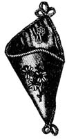
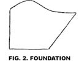
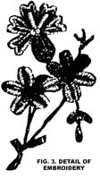
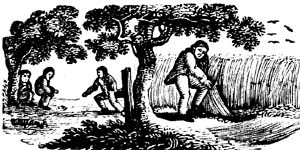
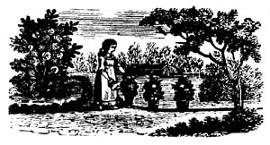

To make the watch pocket shown In Fig. 1 requires a piece of cardboard four inches long and five and one-half inches wide. Shape this according to the diagram, Fig. 2, which represents the pattern reduced to one-quarter of the actual size. The inside of the pocket is covered with pale pink slid the outside with deep red satin fit, after it has been decorated with embroidery, of which Fig. 3 gives the design in full size. The flowers are worked with fine Chet title, in different colors, and the leaves with embroidery silk, in two or three shades of olive color. It is then sewed together, and its seam and edge finished with a red silk cord, which forms three loops, at each end. A small gilt ornament with it look to hold the watch, fastened just below the upper corner, completes the cornucopia.
This is not so good a time as the the month of May for the repair of the barns and the other out-building but it is better to do all the necessary " fixing up" before winter sets in. There are many things that only need to be done in the fall, such as making the division fences and gates for the flocks of sheep, the young stock, etc.; in short, do all those things that may be called labors of preparation, for the incoming or housing of the stock before the day comes for them to go into their places for the winter. It is much easier to repair a floor or manger of the stable before the animals have come to their stalls. It may be that a shed will be needed and It should be built now. The same may be sold of an ice house. Prepare early and prepare well for the severe months of the coming winter.
There are differences of opinion as to the value of late sown rye as a crop for early spring feeding. These differences are almost entirely due to the circumstances of soil and season. Should the soil be poor the rye crop, like any other, will be poor, and should the season close in with hard freezing soon after sowing, the plants will not have made sufficient roots to save them from injury. If, on the other hand, the soil is rich and mellow, and the sowing is done so early that strong, well rooted plants may form, then a profitable crop
may be expected. The writer has seen most sellsfactory results obtained by plowing under a sod-previously well manured-in late autumn, and the ground sown to rye. In the spring this field yielded a heavy growth of fine green fodder, which was used to feed a flock of sheep and other small stock. After this pasturage was over the rye " stubble " was turned under with a heavy coat of manure, and the field planted to corn. In this case the rye was what Is termed a stolen crop, put in between the old meadow and the corn, Instead of the land lying idle from the time the grass was cut until plowed for corn, there had been an extra manuring, plowing, and a fodder crop. Some portion of the field was clay and the additional tillage had a good effect upon the mechanical conditions of the soil, The green crop thus produced came In at just that time In the spring when a supply of fodder of this kind is of special value-the pastures not having fully started and the dry stored food being limited In quantity and of high price.
Grafted or Bu dded Trees. - "J. H .P., " Ashland, Va.. asks about the relative advantage$ of budded and root-grafted trees. As be does not specify the kind or tree, big question can only be answered in general terms. A skillful nurseryman will produce a good tree, It may be by budding, or by grafting. He will some' times be compelled to bud, and at others to graft. if the tree is a healthy one, and hit,; good and abundant roots, it makes no difference how it is produced. Our correspondent asks, it in root grafting, more than one good tree can be made from a seedling stock. Yes, it the stock lea good one, and the grafter understands his business. It makes but little difference how the tree is produced, if it is well furnished with roots.
White Mould on Trees. - J. H. P.," Alexandria, Va., has found upon the roots of trees received from the nursery, - something resembling frost or a white mould." If this to examined by a magnifier, it will doubtless prove to be a lot of woolly plant lice. He should send such trees back to tile nurseryman. It is a plant louse known in England as-"American Blight," though it originated in Europe. A stiff brush, with strong soft soap solution, will kill it.
We last month described the manner of bringing the leaves of the celery into an upright position,or "handling," as the gardeners term it.. The stalks are still green, and not fit for use until they have been whitened or " blanched." This is done by the complete exclusion of light, which is usually effected by a banking up of earth. Any other method that will completely shut out the light will answer. The banking up is done with a spade one person on each side, taking the soil from between the rows and forming a steep bank against the plants, covering all except a few inches of the longest leaves; this bank is 10 or 12 inches wide at the bottom, and should be compact and smooth. In three or four weeks after banking the celery may be used. Only that which is Deeded early requires to be banked; the stock for winter use is blanched in trenches, or in boxes, and needs only the handling to bring the plants into the proper shape. A trench is (lug in a dry place, 10 inches wide, and deep enough to contain the whole plant, so that the top will be level with the surface. The celery is then placed in the trench, packing it as closely as possible, fit an elect position. When cold weather comes the celery which is not injured by a moderate frost, must be covered with straw or leaves, the thickness of which must be increased as the weather becomes colder. For family use, celery is often stored in boxes in the cellar, but the cellar must be cool. Boxes are made nine or tell inches wide, of any convenient length, and of a bight a little less thin that of the plants; the bottom is covered with an inch or two of sand or soil, and the celery placed fit it as in the trenches The taking up and storing of the main crop, in the latitude of New York, is left until the middle of next month, but in more northern localities it must always be done earlier.
It is a great mistake to delay the work of preparation for winter until it is suggested by cool flights or a warning given by blighting frosts. When a plant has been taken from a pot and planted in open ground it usually outgrows its former place and is too large for any vessel of convenient size. The root should be cut away to it considerable extent and likewise the top or foliage must be correspondingly reduced. Novices often fail at this point, for they dislike to part with any of the new growth, and set tile plant it) it pot unpruned and expect, what is not possible, that it will flourish Cut back root system and branch system equally is the rule. Plants when thus transplanted need to be favored by being kept in the shade and sheltered from the drying winds until they have made a good start in the pots, Many of the house plants are kept in their pots during the summer and they will need repotting or the pot washed and the surface soil replaced by fresh, rich earth, A larger pot is Deeded by those plants whose roots have formed a mat along the inner surface. The ball of earth call be examined quickly by spreading the left hand oil the vessel-the stem passing between the fingers, and with the other hand on the bottom invert the pot and give the edge a downward tap against some object. If this does not succeed, pour some water around the edge, and after it short time repeat the operation. All old pots should be clean, and if new ones are used soak them fit water until the pores are filled. A piece of broken vessel is placed over the bottom hole before filling fit the potting earth. All the necessary pots, soil, etc., should be obtained now, that they may be at hand when needed at any time during the winter.
Calystegia pubeseens.-M. N. Y., Hamden, Conn., wishes to know if this plant could be grown ill large pots or tabs. Yes, we should think it would succeed well in tubes falls and make a fine climbing plant in fact, this method of growing them would have this advantage over planting them fit the open ground in that they would not ran over the entire land and become troublesome.
|
 FIG 1. WATCH POCKET |
 |
 |
|
 |
 |
|